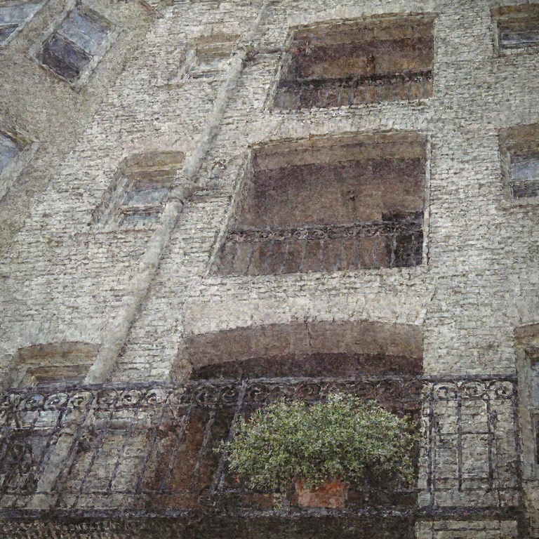
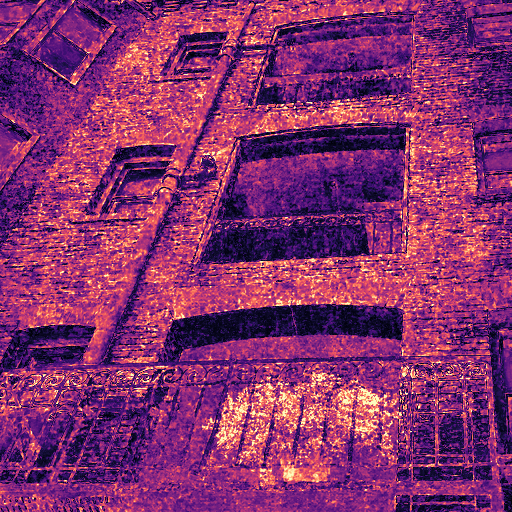
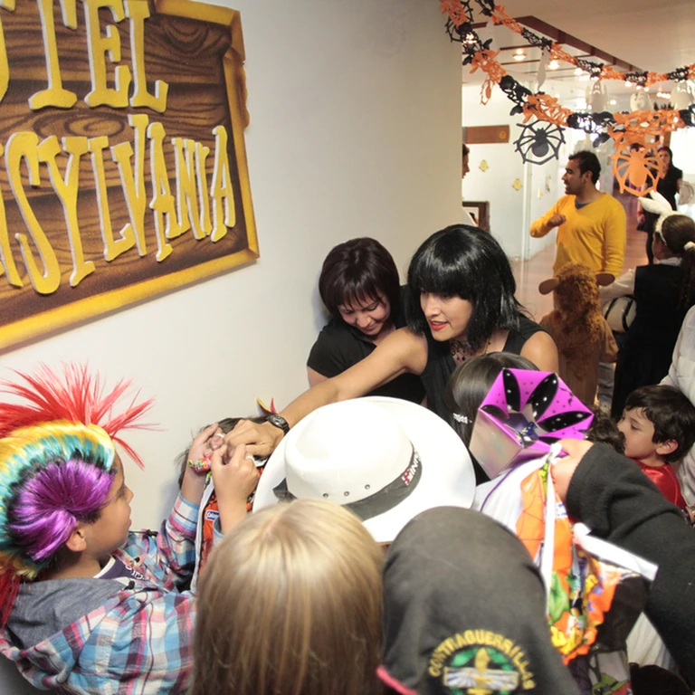

Small prediction errors. A changing input distribution. Each new edit inherits what the last one left behind. 01 Prediction error 02 Exposure bias 03 Across turns How sampling errors can become multi-turn drift First, a purple model rollout departs from a gray reference flow as imperfect velocity predictions change subsequent states. Second, noisy training interpolations are contrasted with states generated by the model at inference. These distributions can differ when the learned flow is imperfect. Finally, three editing turns show each output becoming the next turn's source condition, while each turn samples fresh noise. Residual preservation errors can therefore carry across edits. This is a qualitative schematic, not measured coordinates or a claim that errors always increase at every step. Swipe to explore the diagram ↔ One imperfect update changes the next state. Prediction errors can propagate as every step uses the state reached by the previous one. xk+1 = xk + Δt · vθ(xk, tk, c) Denoising step 0 / 50
Structure stabilizes early. Fine details emerge late, while errors remain correctable. Similarity to the source higher is better ↑ TAIL DENOISING STEPS → Low frequencyMid frequencyHigh frequency DENOISING STATE 43 Actual cached state FULL-IMAGE MAE VS. SOURCE  Full-image MAE · scale 0–0.5 Non-edit region · MSE lower is better ↓ — DENOISING STEPS → TAIL CLOSE-UP · STEPS 48–50 Steer the tail to correct this residual error. Step 43 / 50 Trajectory tail is the place where fine-grained details are finalized and residual preservation errors remain correctable.
Editing comes from the base model. Preservation comes from the source image. Local edit Identity edit ↻ 01 / SOURCE xsource M · Content to preserve INSTRUCTION Change the handsome boy's black clothing to red. Frozenbase model 02 / BASE RESULT xbase 1 − M · The model’s own edit →COMPOSE 03 / PRESERVATION-AWARE TARGET xtarget Preserve + Edit  xtargetComplete endpoint = M ⊙ xsource Preserved source pixels + (1 − M) ⊙ xbaseGenerated edit pixels M selects what stays. 1 − M selects the edit. Explore the handsome boy ↗
One-step correction reduces drift. But one-step training can disrupt the prior. ↻ FROM 03 · OUR TRAINING TARGET ↖ xtarget = M ⊙ xsource + (1 − M) ⊙ xbase Keep the model’s edit. Restore the rest. → BASE ROLLOUT Cached step 49 Steps 1–49: no training objective Train step 50 x base x target INFERENCE · 50 STEPS / EDIT After 5 turns After 10 After 15 After 20 Base modelAll 50 stepsDrift accumulates Switch modelsBase 1–49 → Fine-tuned 50Better preservation · two models Terminal-tuned modelAll 50 stepsDesaturation & detail loss ↶Shared weights across steps → last-step training can disturb earlier dynamics. THEREFORETailSteerOne model. Every step. Retain the learned prior Steer across the tail x target Steering onset Full framework ↗